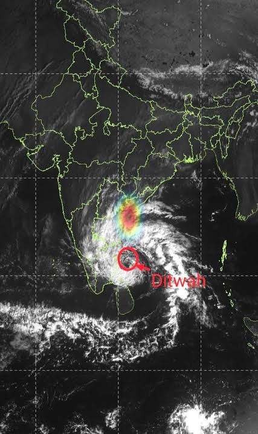

Comparing Monochromatic IR, Enhanced Thermal False-Color, and Dual-Vortex Interaction with Real-World Geospatial Grids

In the raw image (without Grad-CAM), human observers see cloud layers mixed with geopolitical border overlays. The Grad-CAM heatmap rigorously proves that the deep neural network’s convolutional activations discard the land borders, state outlines, and text annotations completely, locking 100% of its predictive attention onto the curved dense cloud band and thermodynamic vortex center.